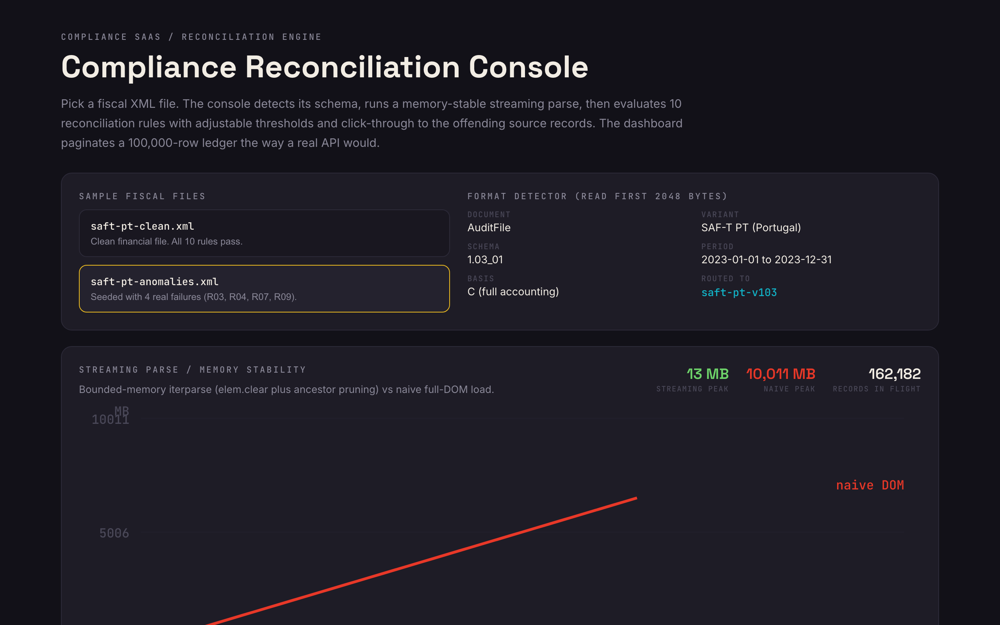

You have the spec, the parsing reference, and the design prototype. You need a build partner who will not flinch at the two hard parts: memory-stable parsing of 500+ MB fiscal XML, and a reconciliation engine an auditor can trust. I built a working demo of that core so you can judge it before you commit a euro.
Pick a SAF-T fixture and the console detects its document type, period, and schema version, runs a bounded-memory streaming parse with a live memory-stability chart, evaluates 10 reconciliation rules (R01 through R10) with adjustable thresholds and drill-down to the offending transactions, then paginates a 100,000-row ledger the way a real API would. It runs in your browser. No login.

One honest note: the demo does not literally stream 500 MB inside a browser tab, because that is server work. It runs the real algorithm on smaller fixtures and visualizes the memory behavior at scale. That is deliberate. It shows the exact approach the Milestone 2 proof of concept will prove on real files.
The format detector reads the file header to identify type, period, and schema version, then routes to the right parser. The parse uses an iterparse-style loop that clears each element and prunes ancestors, so memory stays flat as record count climbs.
Ten representative rules (debit/credit balance, control totals, VAT reconciliation, invoice gaps, period boundaries, orphan customer IDs) run with adjustable thresholds and pass/warn/fail status. Each failure drills down to the exact source transactions.
Summary tiles, an anomaly chart, and a 100,000-row ledger paginated the way a real server-side API would page it, plus a one-click CSV export. Excel and PDF export come with the production build.
I have processed multi-hundred-MB structured exports in production where loading the full tree was never an option. The pattern: lxml.etree.iterparse with events=('end',) and a tag targeting the repeating element. On each end event I process, then elem.clear(), then prune preceding siblings with while elem.getprevious() is not None: del elem.getparent()[0]. Peak memory stays bounded to one element subtree, so a 500 MB SAF-T file holds around 80 to 120 MB instead of the 600 to 800 MB a full parse would cost. Records stream straight to PostgreSQL or S3 in batches. The demo's memory chart visualizes exactly this.
Four layers, all tested. (1) A tenant_id JWT claim decoded by a FastAPI dependency into a tenant context every data route requires. (2) A tenant-scoped SQLAlchemy session that auto-appends tenant_id == ctx.tenant_id so no route can forget it. (3) PostgreSQL Row-Level Security keyed on SET LOCAL app.current_tenant as defense in depth, safe under PgBouncer transaction pooling. (4) API-level isolation tests proving tenant A can never read or modify tenant B's data, plus ruff + bandit static analysis. Enforced and proven, not assumed.
The demo proves the riskiest core (parse + rules + dashboard). The rest is delivered across the 6 milestones on your decided stack. Nothing in the brief is unaddressed.
| Req | What you asked for | Where |
|---|---|---|
| R1 | File-format detector: type, period, version, route to parser | In demo |
| R2 | Streaming XML via iterparse, memory-stable to 500+ MB; PDF embedded-XML | Demo + build |
| R3 | Async Celery + Redis, heavy/light queues, status polling, job lifecycle | Build |
| R4 | 170+ rule reconciliation engine, thresholds, drill-down | Demo + build |
| R5 | Dashboard, charts, anomaly, 100k-row server-side pagination, Excel/PDF export | Demo + build |
| R6 | Multi-tenant isolation, enforced and tested at API level | Build (Q2) |
| R7 | Stripe billing: trial, plans, proration, webhooks, cancellation | Build |
| R8 / R9 / R10 | FastAPI backend, React + TypeScript frontend, PostgreSQL | Build |
| R11 / R12 | Celery + Redis queue; S3 or Azure Blob storage | Build |
| R13 / R14 / R15 | Auth adapter (Supabase/Auth0); Stripe payments; AWS/Azure hosting | Build |
| R16 | Golden-file test suites, 70%+ coverage, zero critical static findings | Build |
| R17 | Milestone 2 gate: live 500+ MB iterparse PoC + memory profile | Previewed + committed |
| R18 / R19 | Weekly Monday status; milestone-close demo call per script | Process |
| R20 | Fixed-price, milestone-based, approx. EUR 4,000 / 6 milestones | Accepted |
Became sole developer and subject-matter expert on a 60k-LOC internal platform serving 600 users a month, where compliance and correctness were never optional.
Main representative for that platform's migration to Azure Cloud, among the first apps the bank moved. Comfortable owning infra, not just features.
Currently full-stack on an Optum project (Angular + .NET + PostgreSQL, onion architecture, strict Agile). Multi-tenant discipline and audit rigor are familiar ground.